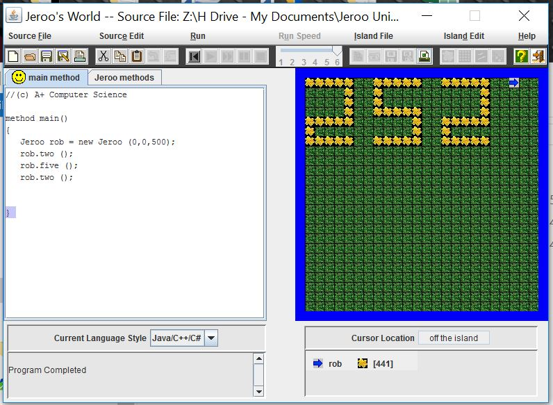

Unit 1

Description:
This unit was an introduction to Jeroo, where we were first given problems to solve. We did not know the processes of methods or loops, so the work was often tedious, full of copying and pasting. We learned the fundamental aspects of Jeroo. For this unit, we did all of our work in the main method and we learned how to do many commands with a Jeroo.
Concepts Learned:
- Instantiation: this is when a Jeroo is named, defined, and put into the program.
- Basic Jeroo commands: we learned how to make a Jeroo hop, pick and toss flowers, and turn, for example.
- Order of commands: we learned that the order of commands in the code matters when dealing with problems, There must be a specific order to perform the commands in order to properly complete the task
Unit 2

Description:
In Unit 2 we were introduced to methods, which made some tasks easier and more efficients. We had to use methods to perform tasks and to organize commands. We put basic commands inside methods and as a result, the problem solving process was highly simplified in most cases. Methods also made it easier to change your code.
Concepts Learned
- Methods; we learned how to define new methods in the Jeroo methods tab, with its specified format.
- Organizing code with methods; methods helped us organize code, which we did by ordering specific tasks in the method.
- Methods within methods: we learned the problem-solving process can be made even more simple by using methods, within methods, which helps organize code as well.
Unit 3
Description:
We further discovered how to make Jeroo easier with loops. We learned different kinds of loops and how to organize them. We learned how to format loops correctly and use them correctly. We had to solve many different Jeroo problems using loops.
Concepts Learned
- While loop: a block of code associated with a condition, when the condition is true, the loop will always run the code.
- If/then loops: these can be on their own or placed within while loops. They help make sure the while loops perform the task correctly.
- Formatting within loops; we learned the (is(Condition)(direction) format and isFacing(direction). We learned symbols such as !(not) and &&(and).
Unit 4

Description:
In Unit 4, we continued to work with loops. We were introduced to new forms of loops and other ways to organize the loops. We were faced with new challenges that incorporated these new loops and organization methods.
Concepts Learned
- If/else loops: the if part checks if a condition is true and performs the task. The else part performs another task only if the condition is false.
- Recursion: this is when a method calls itself, when used properly with loops, it can make using Jeroo very efficient.